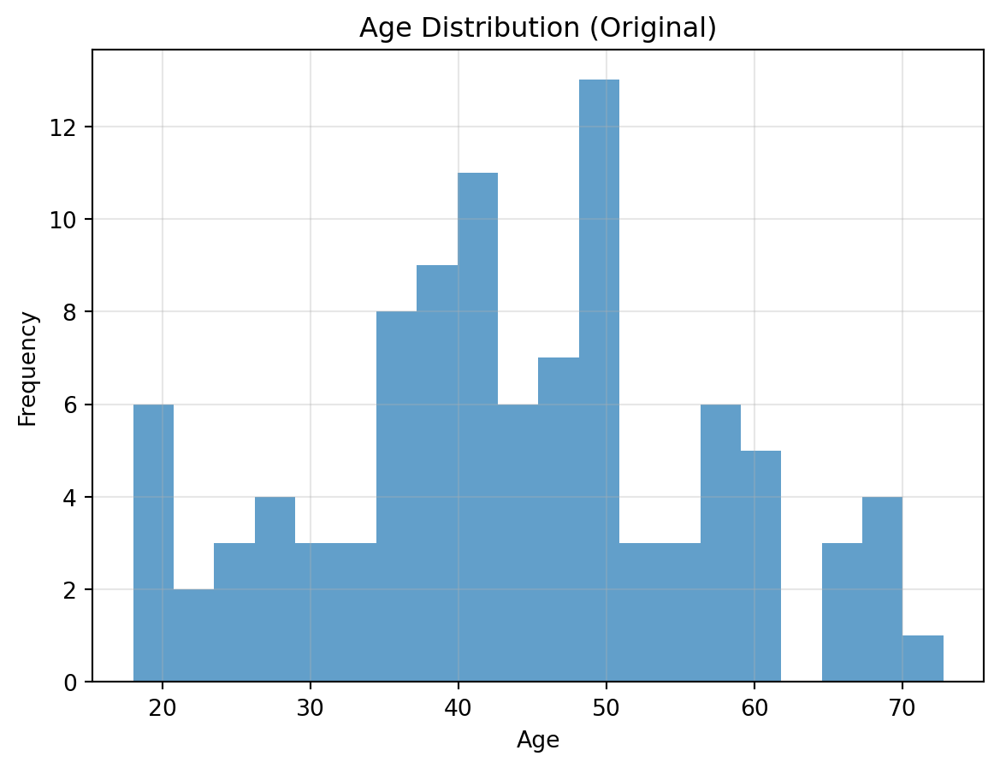
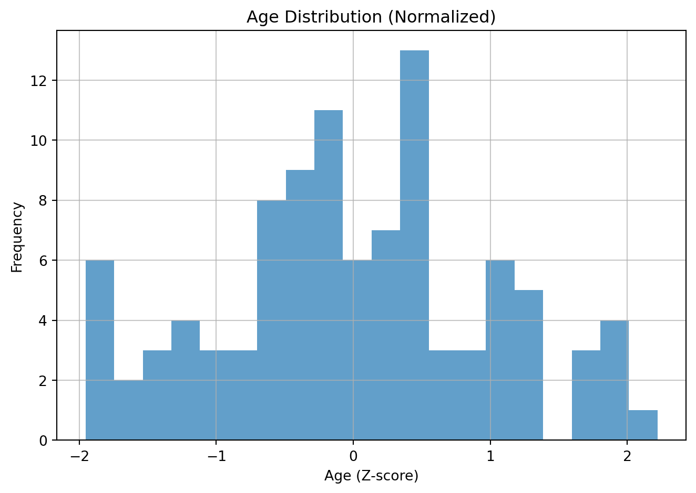
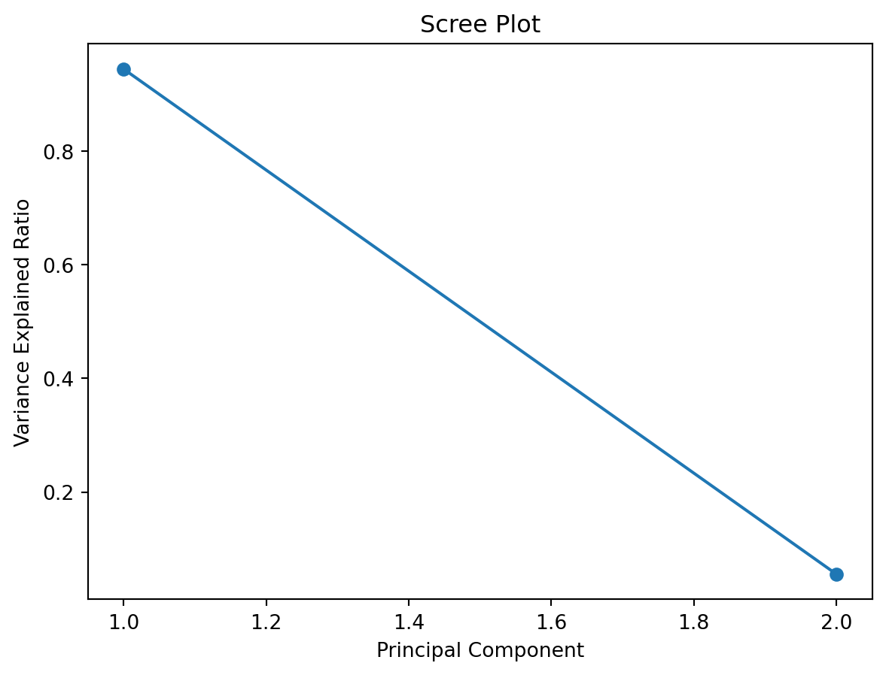
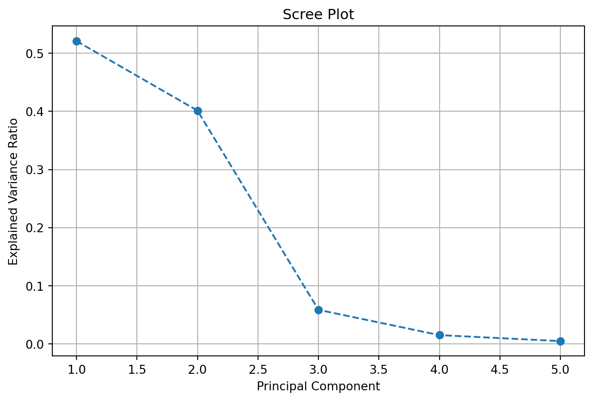
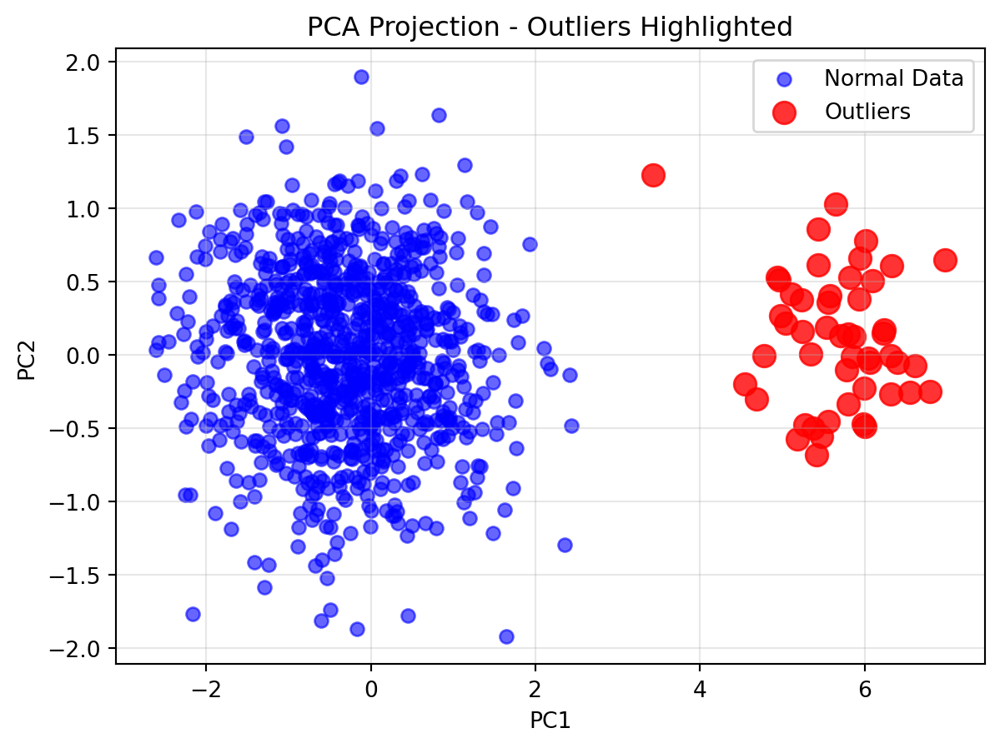
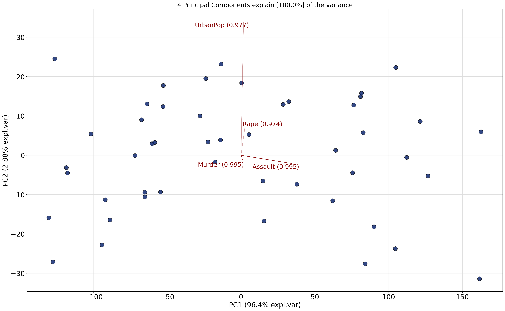
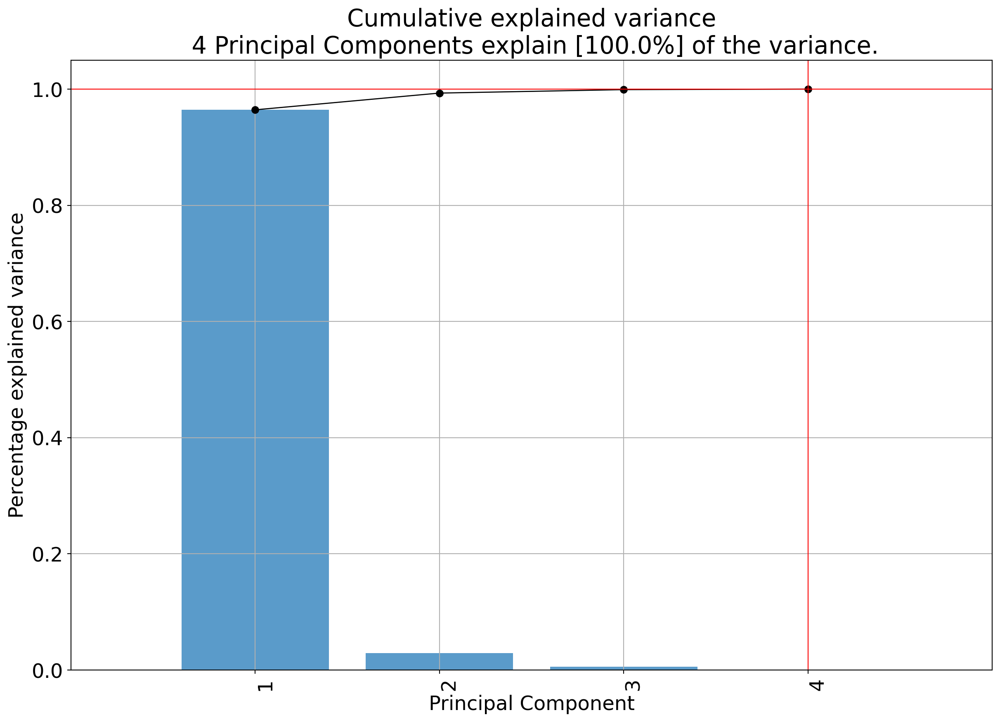
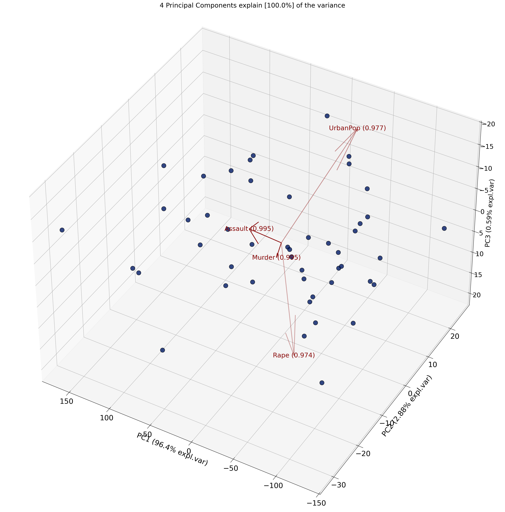

This chapter demonstrates basic unsupervised machine learning concepts using Python.
Learning Objectives
Refresher on Python
Understand the difference between supervised and unsupervised learning.
Apply PCA and clustering to example data.
Visualize results.
6.1 Refresher on Python
# 1. IMPORTING PACKAGESimport pandas as pdimport matplotlib.pyplot as pltimport numpy as np# 2. READING DATA WITH PANDAS FROM GITHUB# GitHub URL for the diabetes data# Convert from GitHub web URL to raw data URLgithub_url ="https://raw.githubusercontent.com/cambiotraining/ml-unsupervised/main/course_files/data/diabetes_sample_data.csv"# Read CSV file directly from GitHubdiabetes_data = pd.read_csv(github_url)# Display basic information about the dataprint("\nData shape:", diabetes_data.shape)print("\nFirst 5 rows:")print(diabetes_data.head())print("\nBasic statistics:")print(diabetes_data.describe())# 3. PLOTTING WITH MATPLOTLIB# Plot 1: Histogram of Ageplt.figure(figsize=(10, 6))plt.hist(diabetes_data['age'], bins=20, alpha=0.7, color='skyblue', edgecolor='black')plt.title('Distribution of Age', fontsize=14, fontweight='bold')plt.xlabel('Age')plt.ylabel('Frequency')plt.grid(True, alpha=0.3)#plt.savefig('age_distribution.png', dpi=300, bbox_inches='tight')plt.show()
Normalization, specifically Z-score standardization, is a data scaling technique that transforms your data to have a mean of 0 and a standard deviation of 1. This is useful for many machine learning algorithms that are sensitive to the scale of input features.
The formula for Z-score is:
\[ z = \frac{x - \mu}{\sigma} \]
Where: - \(x\) is the original data point. - \(\mu\) is the mean of the data. - \(\sigma\) is the standard deviation of the data.
For example, say you have two variables or features on very different scales.
Age
Weight (grams)
25
65000
30
70000
35
75000
40
80000
45
85000
50
90000
55
95000
60
100000
65
105000
70
110000
75
115000
80
120000
If these are not brought on similar scales, weight will have a dispproportionate influence on whatever machine learning model we build.
Hence we normalize each of the features separately, i.e. age is normalized relative to age and weight is normalized relative to weight.
import numpy as npimport matplotlib.pyplot as pltfrom sklearn.preprocessing import StandardScaler# 1. Generate age and weight datanp.random.seed(42)age = np.random.normal(45, 15, 100) # 100 people, mean age 45, std 15age = np.clip(age, 18, 80) # Keep ages between 18-80weight =70+ (age -45) *0.3+ np.random.normal(0, 10, 100) # Weight correlated with ageweight = np.clip(weight, 45, 120) # Keep weights between 45-120 kgprint("Original data:")print(f"Age: mean={age.mean():.1f}, std={age.std():.1f}")print(f"Weight: mean={weight.mean():.1f}, std={weight.std():.1f}")# 2. Normalize the datascaler = StandardScaler()data = np.column_stack((age, weight))normalized_data = scaler.fit_transform(data)age_normalized = normalized_data[:, 0]weight_normalized = normalized_data[:, 1]# Histogram: Age (Original)plt.figure()plt.hist(age, bins=20, alpha=0.7)plt.title('Age Distribution (Original)')plt.xlabel('Age')plt.ylabel('Frequency')plt.grid(True, alpha=0.3)plt.show()# Histogram: Age (Normalized)plt.figure()plt.hist(age_normalized, bins=20, alpha=0.7)plt.title('Age Distribution (Normalized)')plt.xlabel('Age (Z-score)')plt.ylabel('Frequency')plt.grid(True, alpha=0.7)plt.tight_layout()plt.show()
Original data:
Age: mean=43.6, std=13.1
Weight: mean=69.8, std=9.8


6.3 Setup
import numpy as npimport pandas as pdimport matplotlib.pyplot as pltfrom sklearn.decomposition import PCAfrom sklearn.cluster import KMeans
Try the same code above but now without normalisation.
What differences do you observe in PCA with and without normalization?
6.7 Scree plot
A scree plot is a simple graph that shows how much variance (information) each principal component explains in your data after running PCA. The x-axis shows the principal components (PC1, PC2, etc.), and the y-axis shows the proportion of variance explained by each one.
You can use a scree plot to decide how many principal components to keep: look for the point where the plot levels off (the elbow): this tells you that adding more components doesn’t explain much more variance.
# Scree plot: variance explained by each componentplt.plot(range(1, len(pca.explained_variance_ratio_) +1), pca.explained_variance_ratio_, marker='o')plt.title("Scree Plot")plt.xlabel("Principal Component")plt.ylabel("Variance Explained Ratio")plt.show()

A scree plot may have an elbow like the plot below.

6.8 Clustering Example
PCA is different to clustering where you are trying to find patterns in your data. We will encounter clustering later in the course.
6.9 🧠 PCA vs. Other Techniques
PCA is unsupervised (no labels used)
Works best for linear relationships
Alternatives:
t-SNE for nonlinear structures
6.10 🧬 In Practice: Tips for Biologists
Always standardize data before PCA
Be cautious interpreting PCs biologically—PCs are mathematical constructs
6.10.1 Goals of unsupervised learning
Finding patterns in data
Here is an example from biological data (single-cell sequencing data) (the plot is from [2])(Aschenbrenner et al. 2020).
Example tSNE
Example heatmaps
Finding interesting patterns
You can also use dimensionality reduction techniques (such as PCA) to find interesting patterns in your data.

Finding outliers
You can also use dimensionality reduction techniques (such as PCA) to find outliers in your data.
Finding hypotheses
All of these can be used to generate hypotheses. These hypotheses can be tested by collecting more data.
6.10.2 Exercise
Perform PCA on a dataset of US Arrests
Load data
!pip install pca
from pca import pcaimport pandas as pd# Load the US Arrests data# Read the USArrests data directly from the GitHub raw URLurl ="https://raw.githubusercontent.com/cambiotraining/ml-unsupervised/main/course_files/data/USArrests.csv"df = pd.read_csv(url, index_col=0)print("US Arrests Data (first 5 rows):")print(df.head())print("\nData shape:", df.shape)
US Arrests Data (first 5 rows):
Murder Assault UrbanPop Rape
State
Alabama 13.2 236 58 21.2
Alaska 10.0 263 48 44.5
Arizona 8.1 294 80 31.0
Arkansas 8.8 190 50 19.5
California 9.0 276 91 40.6
Data shape: (48, 4)
Perform PCA
model = pca(n_components=4)out = model.fit_transform(df)ax = model.biplot(n_feat=len(df.columns), legend=False)
[07-08-2025 14:09:32] [pca.pca] [INFO] Extracting column labels from dataframe.
[07-08-2025 14:09:32] [pca.pca] [INFO] Extracting row labels from dataframe.
[07-08-2025 14:09:32] [pca.pca] [INFO] The PCA reduction is performed on the 4 columns of the input dataframe.
[07-08-2025 14:09:32] [pca.pca] [INFO] Fit using PCA.
[07-08-2025 14:09:32] [pca.pca] [INFO] Compute loadings and PCs.
[07-08-2025 14:09:32] [pca.pca] [INFO] Compute explained variance.
[07-08-2025 14:09:32] [pca.pca] [INFO] Outlier detection using Hotelling T2 test with alpha=[0.05] and n_components=[4]
[07-08-2025 14:09:32] [pca.pca] [INFO] Multiple test correction applied for Hotelling T2 test: [fdr_bh]
[07-08-2025 14:09:32] [pca.pca] [INFO] Outlier detection using SPE/DmodX with n_std=[3]
[07-08-2025 14:09:32] [pca.pca] [INFO] Plot PC1 vs PC2 with loadings.
[07-08-2025 14:09:32] [scatterd.scatterd] [INFO] Create scatterplot

Variance explained plots
model.plot()
(<Figure size 1440x960 with 1 Axes>,
<Axes: title={'center': 'Cumulative explained variance\n 4 Principal Components explain [100.0%] of the variance.'}, xlabel='Principal Component', ylabel='Percentage explained variance'>)

3D PCA biplots
model.biplot3d()
[07-08-2025 14:09:32] [pca.pca] [INFO] Plot PC1 vs PC2 vs PC3 with loadings.
[07-08-2025 14:09:32] [scatterd.scatterd] [INFO] Create scatterplot
(<Figure size 3000x2500 with 1 Axes>,
<Axes3D: title={'center': '4 Principal Components explain [100.0%] of the variance'}, xlabel='PC1 (96.4% expl.var)', ylabel='PC2 (2.88% expl.var)', zlabel='PC3 (0.59% expl.var)'>)

Loadings
Recall
What is being plotted on the axes (PC1 and PC2) are the scores.
The scores for each principal component are calculated as follows:
\[
PC_{1} = \alpha X + \beta Y + \gamma Z + ....
\]
where \(X\), \(Y\) and \(Z\) are the normalized features.
The constants \(\alpha\), \(\beta\), \(\gamma\) are determined by the PCA algorithm. They are called the loadings.
[2] Deconvolution of monocyte responses in inflammatory bowel disease reveals an IL-1 cytokine network that regulates IL-23 in genetic and acquired IL-10 resistance Gut, 2020 link
Aschenbrenner, Dominik, Maria Quaranta, Soumya Banerjee, Nicholas Ilott, Joanneke Jansen, Boyd Steere, Yin-Huai Chen, et al. 2020. “Deconvolution of Monocyte Responses in Inflammatory Bowel Disease Reveals an IL-1 Cytokine Network That Regulates IL-23 in Genetic and Acquired IL-10 Resistance.”Gut, October, gutjnl-2020-321731. https://doi.org/10.1136/gutjnl-2020-321731.